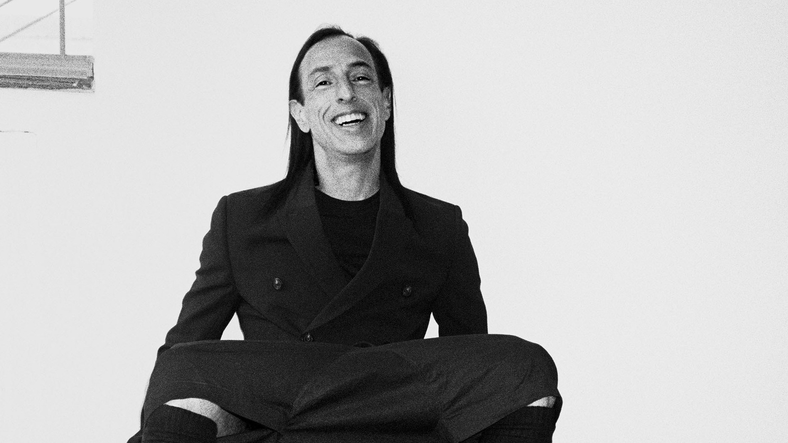

Rick Owens is an American fashion designer celebrated for his distinctive and edgy style, which often includes dark, gothic, and unconventional designs. He's known for his avant-garde approach to fashion, particularly his use of drapery and leather, and has established himself as a key figure in the world of contemporary high fashion.
Rick Owens was born on November 18, 1962, in Porterville, California, USA. He attended Otis College of Art and Design in Los Angeles and later studied at the Parsons School of Design in New York. His fashion journey began in 1994 when he launched his own label, which quickly gained recognition for its distinct aesthetic. Owens draws inspiration from a wide range of sources, including music, art, and subcultures. He often incorporates elements of gothic, grunge, and avant-garde styles into his designs, creating a unique and unconventional fashion language that has made him a prominent figure in the industry.